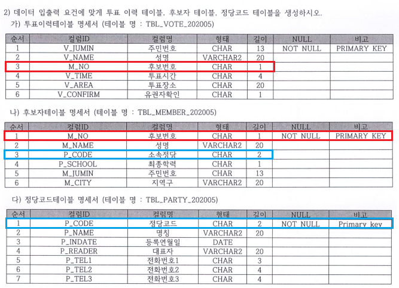
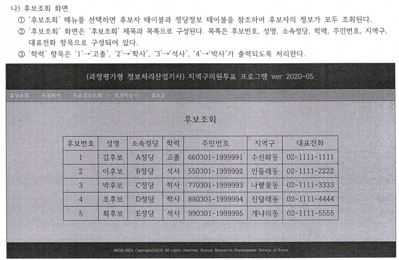
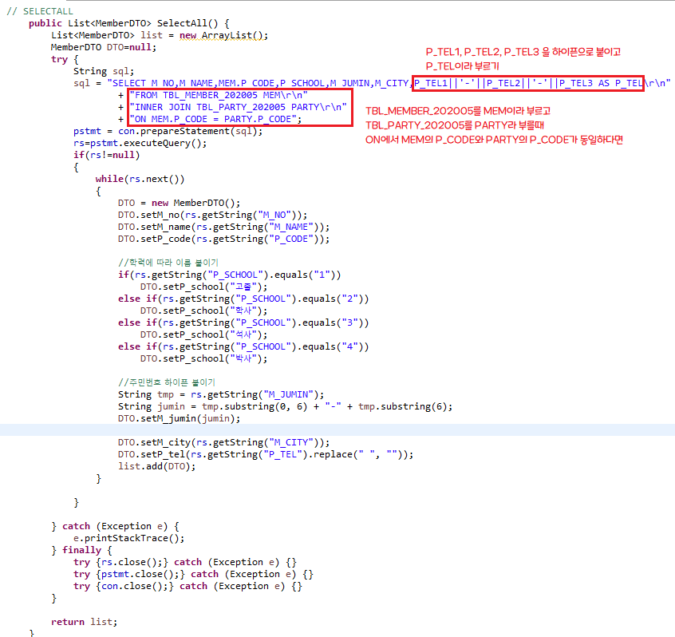
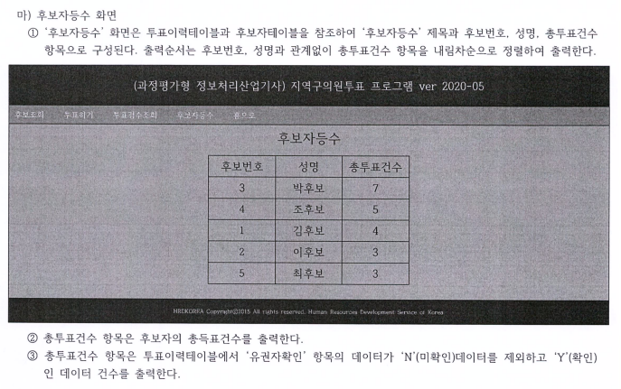
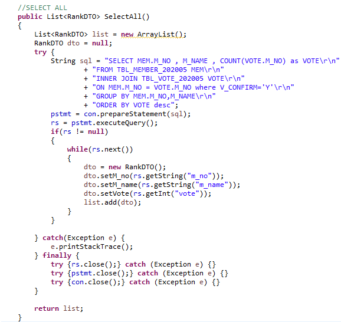
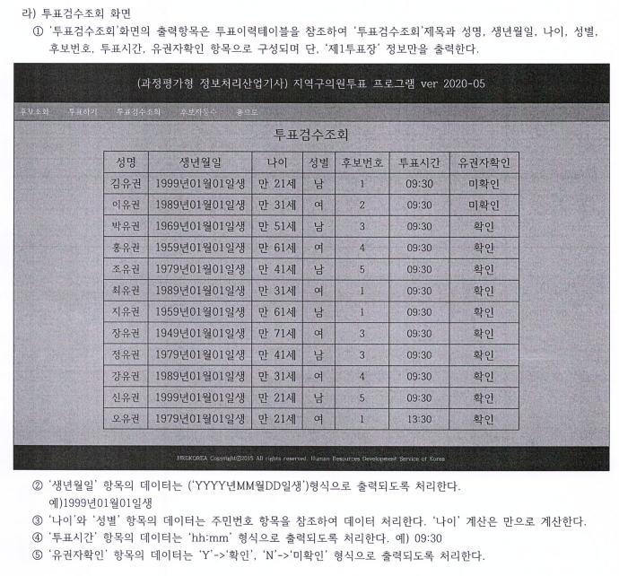
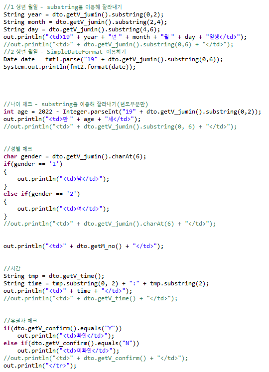

1. 쇼핑몰이 아닌 투표에 대한 경우 외래키를 사용한다
사진을 참고했을때 나)후보자테이블 명세서에 후보번호와 소속정당이 겹친다

2. 우선 문제에서 요구하는 테이블을 모두 만들어주자
SQL문
3. 후보조회 화면에 대한 요구사항과 DAO코드


4. 후보자등수 화면에 대한 요구사항과 DAO코드


5. 투표검수 조회에 대한 요구사항과 jsp코드

